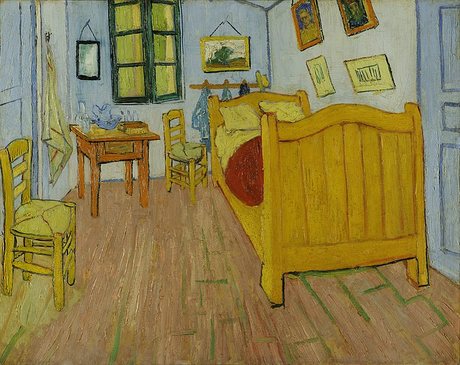
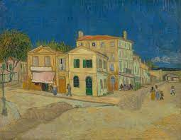

Vincent van Gogh (1853-1890) was a Dutch post-impressionist painter who is widely regarded as one of the most influential figures in the history of Western art. He created around 2,100 artworks, including paintings, drawings, and sketches, during his relatively short artistic career.
Van Gogh's two years at Arles in France (1888-89) were one of his most artistically productive perios. He was enchanted by the local contryside and light; his works from this period are rich in yellow, ultramarine and mauve. Among the most well-known works of that time is an oil painting of his rented room, entitled Bedroom in Arles.
On view: Vincent van Gogh Museum, Amsterdam
In Arles, the painter began a friendship with the owners of a local hotel, known as the Cafe de la Gare. The building ispired two more famous creations. The fist of which is known as The Yellow House
On view: Vincent van Gogh Museum, Amsterdam
The second paiting is one of many people's favourites: The Cafe Terrace at Night. The location ath the Place du Forum in Arles was refurbished to replicate van Gogh's painting.
On view: Kröller-Müller Museum, Otterlo
After his time at Arles, van Gogh moved to a former monastery at nearby Sait-Remy. The building's garden and surroundings countryside became the main subjects of his paintings. Some of his works from this time are characterised by swirls, such asThe Starry Night.

On view: The Museum of Modern Art, New York